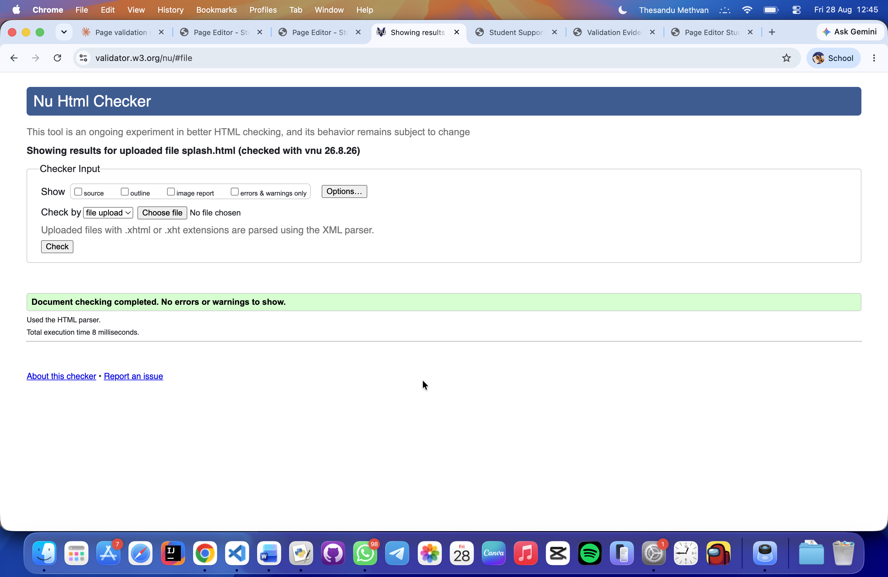
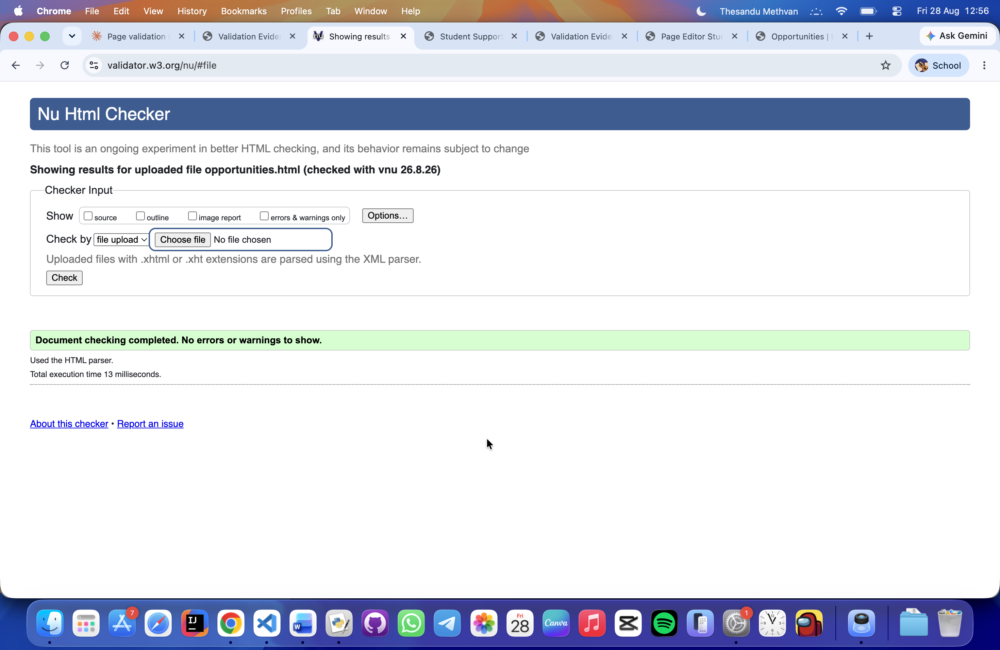
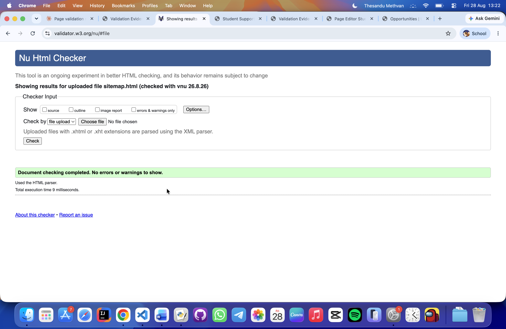
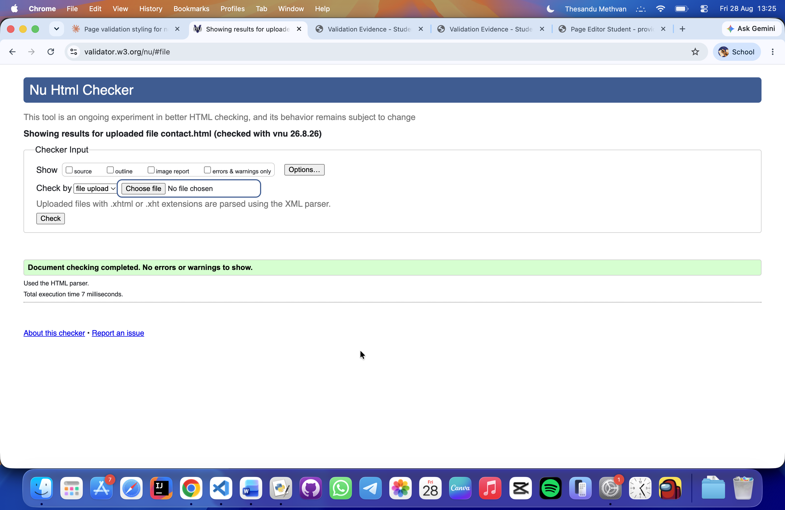
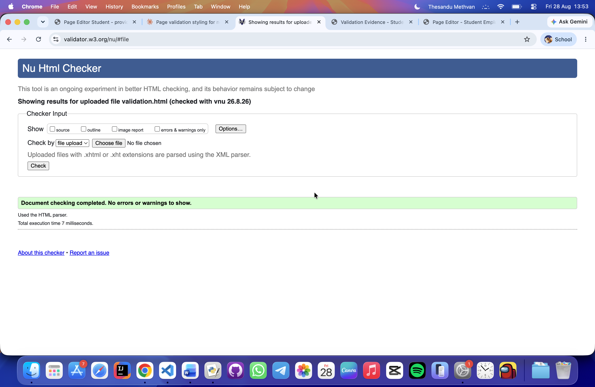

Validation Page Overview
Use this page to provide evidence that each submitted HTML page has been checked using the W3C Markup Validation Service. Each section should include a screenshot of the validation result, a brief reflection on any issues found and fixed, and a link back to the matching Page Editor section.
Replace the placeholder image paths with your own validation screenshots. Each screenshot should clearly show the page name or URL and the validation result.
Splash Page Validation Report - splash.html
The Nu Html Checker returned one error: the meta refresh tag content="3;url=support.html"
was missing the required space after the semicolon. This was fixed by changing it to content="3; url=support.html".
After this fix, the page passed with no errors or warnings.

Back to Page Editor page
Back to the Splash page section in the Page Editor
Back to Splash page
Career Support and Terms Page Validation Report - support.html
I ran the "support.html" through the validator and not found any errors or warnings. The page passed validation successfully
Back to Page Editor page
Back to the Career Support and Terms section in the Page Editor
Back to Support page
Opportunities Page Validation Report - opportunities.html
The validator raised one warning: the second <section> (containing the highlight button and table) had no heading,
since a <caption> on a table does not count as a section heading.
This was fixed by adding a visually-hidden <h2> at the start of that section,
keeping the visual design unchanged.

Back to Page Editor page
Back to the Opportunities page section in the Page Editor
Back to Opportunities page
Sitemap Page Validation Report - sitemap.html
The validator found two issues with nav link cause of missing space between attributes; and missing heading section and also add visually hidden heading as same as the previous page.

Back to Page Editor page
Back to the Sitemap page section in the Page Editor
Back to Sitemap page
Contact / Enquiry Page Validation Report - contact.html
In the Nu Html checker it didn't detected any errors.

Back to Page Editor page
Back to the Contact / Enquiry page section in the Page Editor
Back to Contact page
Page Editor Validation Report - editor.html
Nu Html checker didn't detect any errors.

Back to Page Editor page
Validation Page Validation Report - validation.html
Nu Html checker didn't detect any errors.

Back to Page Editor page
Back to the Page Editor overview